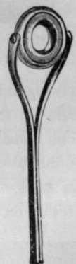

From Land And Pier. Part 2
Description
This section is from the book "Sea Fishing", by John Bickerdyke. Also available from Amazon: Sea Fishing.
From Land And Pier. Part 2
While for boat work the sea angler requires a rod rather short than long, for fishing from rocks and the shore the rod should err on the side of length. Even when fishing from a pier it is well to have as long a rod as can be conveniently handled, to keep the fish one has the good fortune to hook from bolting in among the old woodwork or iron girders beneath. Any long rod made as light as possible, having due regard to the necessary strength, is suitable for fishing from piers or similar positions ; while for spinning or casting out any distance nothing is better than the excellent cane rods made with greenheart tops, such as are used by pike fishers at the present day.
Those who wish to avoid a multiplicity of rods may provide themselves with one made on the following lines : Let the butt and middle joint be of East Indian cane, and let there be two tops of greenheart. The longest top and the butt and middle joint should measure each five feet, which together will give a rod of fifteen feet. The second top should be only eighteen inches in length, and strong. It will be found useful for large bass, codfish and conger, and also for spinning. The rod measures with this top 11 ft. 6 ins., which is a very convenient length for spinning or casting out any moderately heavy tackle. To obtain a very long rod there should be an extra butt, four feet in length, which will fit on to the proper butt of the rod, making the whole rod (now in four pieces), with the longest top, nineteen feet. 'General rods,' which in their various combinations are sold as being suitable for salmon, trout, pike, stickleback or shark fishing, as the case may be, are often and properly condemned. They are only good for any one of these things by accident. But the sea-fishing rod such as I have described is really a useful weapon put together in any of its three lengths. It should be understood that the extra butt is only required under special circumstances, and can as a rule be dispensed with.
A rod of twenty feet is an awe-inspiring, arm-wearying weapon to hold, and those who consult their comfort will do without it so far as possible.
In this connection I may call attention to the Brobding-nagian weapons which are used at Biarritz by the natives for catching mullet, and are described by Mr. Senior in his very interesting chapter on Foreign Fish.
When buying a rod it is important to see that the winch fittings really do ' fit' the large reel which is required in sea fishing. As a general rule this little detail is neglected by the tackle-makers, but of late years a number of most excellent winch fittings have been invented which, within certain limits, take any sized reel plate. Among others I call to mind the Weger, the Universal, and Warner's. The ordinary arrangemerit of rings, even when it fits a reel, invariably sticks sooner or later.
The snake rod rings shown in the illustration have come into very general use, and are excellent for most kinds of fishing, but there is a method of casting (not from the reel, but by drawing down loops of line between the rings and holding them on the fingers of the left hand) which cannot well be done if snake rings are fitted all down the rod, and therefore I would rather recommend for the two rings next the butt the use of the bridge ring which was illustrated in the volumes on Freshwater Fishing in this library and is hen; reproduced.
Snake Ring.
Bridge Ring.
A rod top end ring I invented, which is also illustrated, works on pivots and adapts itself to whatever angle the line makes with the rod. It has an inner ring of phosphor bronze which can be twisted round whenever it gets a little worn. For sea use it should be made extra strong. The pivots may appear to be the weak part of this ring, but I have had the invention on my rods for many years, and some thousands of them are in use, yet I never heard of a pivot breaking except when in the hands of careless workmen before being fastened to the rod top. If the ordinary top ring is used, it should most certainly be fitted with the inner ring or lining as shown in the left-hand illustration. The ordinary rings get cut into grooves very quickly, and the great object of the inner ring is that when a little worn it can be moved round and the wearing point shifted. I find, however, that the sharp edges of the inner ring, unless countersunk, are apt to cut or tray the line when it forms an acute angle with the rod, as when a fish has been reeled in and the angler is about to gaff it. This led to my inventing the ring working on pivots, which varies its angle with the angle of rod and line, and so prevents a very great deal of wear and tear. For use with very heavy leads the block or roller ring illustrated in Chapter VII. is preferable to either of the two described.
Rigid Top Ring With Movable Lining.
Bicker-Dyke ' End Ring.
All rings should be large and of equal size. It is a great mistake to vary their size, making them smaller towards the top end of the rod. Ring and all other whippings should be of wire, the portion of the rod to be whipped first being served with fine thread. Over the wire a little soft solder can be run with advantage. This makes a very permanent fastening for the rings, etc.
The reel should be of the Nottingham pattern, fitted with the wire line guard, another little invention of my own which prevents the line uncoiling and overcomes one of the greatest drawbacks to the use of the Nottingham reel in the hands of beginners. It should also have a check which can be put on or off by moving a button on the back plate. The one shown in the illustration is Farlow's Sun reel. The back is lined on the inside with metal, which prevents the wood swelling and the parts sticking. It is fitted with my line guard. Of course, the better the reel, the better it will work. For boys' use from a pier where only small fish are to be caught, a small reel to hold fifty or sixty yards of line will answer all purposes ; but where bass or large mullet may be expected, then certainly not less than 150 yards of line should be on the reel, otherwise the angler may lose the largest fish of a lifetime and for ever after regret it.
Continue to:
Tags
fishing, hooks, bait, fishermen, spanish mackerel, mackerel fishing